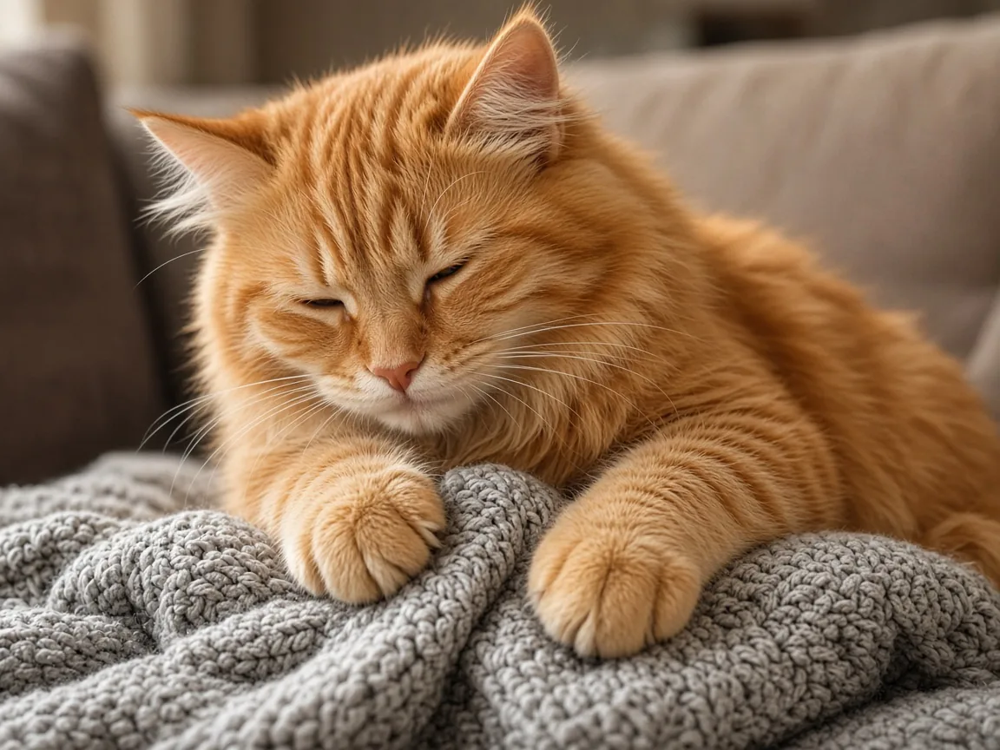
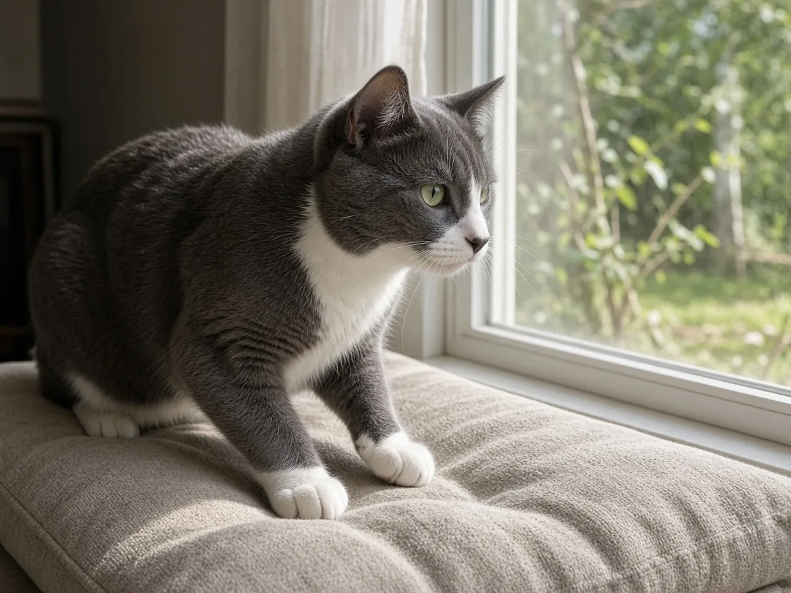

Why do cats knead?
Cats knead because kittens tread with alternating front paws on their mother's belly to help the milk flow while they nurse, and many cats simply keep doing it as adults, especially when they feel relaxed and safe. Researchers describe it as a juvenile behavior that some cats carry into adulthood rather than growing out of. On its own, kneading is normal and nothing to worry about. If your cat also sucks on fabric while it kneads, that pattern is worth a closer look, which we cover below.

What kneading looks like, and where it starts
A 2024 ethogram of the domestic cat, published in the open access journal Pets by Isabelle Kappel and colleagues at Friedrich Schiller University Jena and the University of Vechta, catalogs 117 cat behaviors from video of 170 cats. It defines kneading as a cat alternately pressing its front paws into a soft object, protracting and retracting its claws with each press, and calls it "an example of cat juvenile behaviour retained into adulthood and directed towards humans by domestic cats." The same catalog separately describes the kitten version, labelled "kitten drinks and kneads": while nursing, a kitten "kneads with the paws next to the teat to stimulate the flow of milk." That paw action, repeated at almost every feed for the first weeks of life, is the behavior most researchers think adult kneading grew out of.
Why some adult cats never stop
The idea that kneading is a kitten behavior kept into adulthood goes back further, to The Domestic Cat: The Biology of Its Behaviour, the standard academic reference on feline behavior edited by Dennis Turner and Patrick Bateson, which the 2024 ethogram cites as its source for that claim. Many young mammals keep some juvenile traits as adults, a pattern biologists call neoteny, and cat researchers generally treat kneading the same way they treat a grown cat still meowing at people for attention: a behavior that worked on the mother and that some cats, for reasons that are not yet pinned down, keep using with people and other cats they trust. No published study has tracked which individual cats keep kneading for life and which largely stop, or tested what the behavior does for an adult cat, so honestly, nobody knows exactly why some cats are lifelong "kneaders" and others are not.
Paws, scent and a favorite spot
A cat's front paws carry scent producing glands, one of several places on the body cats use to leave a scent mark, alongside the cheeks and flanks they rub against furniture and people. Turner and Bateson's volume treats this kind of paw contact as part of the wider tactile and scent signaling cats use toward objects, other cats and the people they live with. That fits what most owners notice: cats tend to knead soft things that hold a paw print and a scent well, such as blankets, cushions and laps, rather than a hard floor or a tabletop. See our glossary entry on kneading for the short definition.
Kneading plus sucking: when it points to something bigger
Some cats knead while sucking on a blanket, a sweater or their own fur, echoing the kitten combination of treading and nursing at the same time. Occasional sucking alongside kneading is not automatically a problem. But a 1997 study in Applied Animal Behaviour Science by John Bradshaw, Peter Neville and Diana Sawyer at the University of Southampton surveyed the owners of 152 cats that chewed, sucked or ate non food material, mostly wool, and found the behavior was commonest in Siamese and Burmese type cats. Onset often followed rehoming, or came later between 6 and 18 months of age, and the authors linked it to factors in the kitten's early environment, including how early it was weaned. A later case control study of 204 Siamese and Birman cats found that early weaning raised the odds of wool sucking in Birmans, though the link was not significant in Siamese cats in that sample. If your cat sucks fabric often, swallows it, or the habit seems driven and hard to interrupt, especially in an oriental breed, that fits the pattern these studies describe better than plain kneading, and it is worth mentioning to your vet.

Living with a cat that kneads
International Cat Care, the veterinary charity, advises owners not to punish kneading. It is normal behavior, punishing it risks harming the trust between you and your cat, and it rarely changes the habit anyway. If claws out make kneading uncomfortable, keep your cat's nails trimmed and put a folded blanket or cushion between your lap and its paws rather than pushing the cat away. Many cats also purr while they knead; our why do cats purr? post covers that separate signal and when a purr means something other than contentment. A cat that chooses to knead on you, rather than on the sofa, is treating you the way a kitten treats its mother, which fits other comfort signals covered in our cat behavior guide, such as a slow blink or a relaxed tail held high.
When to get veterinary help
Kneading by itself is not a sign that a cat is distressed, and there is no published evidence that it means a cat is unhappy. Treat it differently only if it changes suddenly, comes with crying, restlessness or signs of pain, or if your cat starts chewing and swallowing fabric rather than just sucking it, since swallowed material can cause a blockage. Any of those calls for a vet visit rather than a wait and see approach. Kittens go through their own fast changing stage of nursing related behavior, covered in our kitten care guide; not every kitten habit is one you should expect in an adult cat. Every paper behind this page is listed with its DOI on our cat research page.
Cat kneading FAQ
Why do cats knead blankets and pillows?
It is a kitten behavior, originally used to press on the mother's belly and help milk flow during nursing, that many adult cats keep using on soft surfaces that remind them of that comfort.
Does kneading mean my cat is happy?
Usually, yes. Most cats knead when relaxed, content and feeling safe, often alongside purring or a slow blink. It is not proof of distress on its own.
Why does my cat knead and suck on fabric at the same time?
This combines the kitten treading and suckling actions. Occasional fabric sucking with kneading is common, but frequent, driven fabric sucking or swallowing, especially in Siamese or Burmese type cats, has been linked to early weaning and is worth asking your vet about.
Should I stop my cat from kneading me?
You do not need to, and International Cat Care advises against punishing it. If the claws hurt, trim your cat's nails and put a cushion between your lap and its paws instead of pushing the cat away.
Do all cats knead?
No. Kneading is common but not universal. Some adult cats knead often, some rarely, and researchers have not identified why individual cats differ.
Sources
- Kappel I., Riedel M.C., Becker F., Hicks S., Warlich-Zach N., Ganslosser U. (2024) Ethogram of the domestic cat. Pets 1(3):284 to 314. doi:10.3390/pets1030021
- Turner D.C., Bateson P. (Eds.) (2013) The Domestic Cat: The Biology of Its Behaviour, 3rd ed. Cambridge University Press. doi:10.1017/CBO9781139177177
- Bradshaw J.W.S., Neville P.F., Sawyer D. (1997) Factors affecting pica in the domestic cat. Applied Animal Behaviour Science 52(3 to 4):373 to 379. doi:10.1016/S0168-1591(96)01136-7
- International Cat Care: Why do cats..?
Cite this page
Students and teachers are welcome to cite this page. Add your access date if your teacher or style guide asks for one.
APA (7th ed.)
MeowWise. (2026, November 2). Why do cats knead? https://meowwise.com/blog/why-do-cats-knead.html
MLA (9th ed.)
“Why do cats knead?” MeowWise, 2 Nov. 2026, meowwise.com/blog/why-do-cats-knead.html.
Chicago (bibliography)
MeowWise. “Why do cats knead?” Last modified November 2, 2026. https://meowwise.com/blog/why-do-cats-knead.html.
General education, not veterinary advice. If you are worried about your cat, contact your veterinarian; in an emergency, go to the nearest emergency vet.